🌷 Flower Gallery
Click any flower to set it as the main image.
 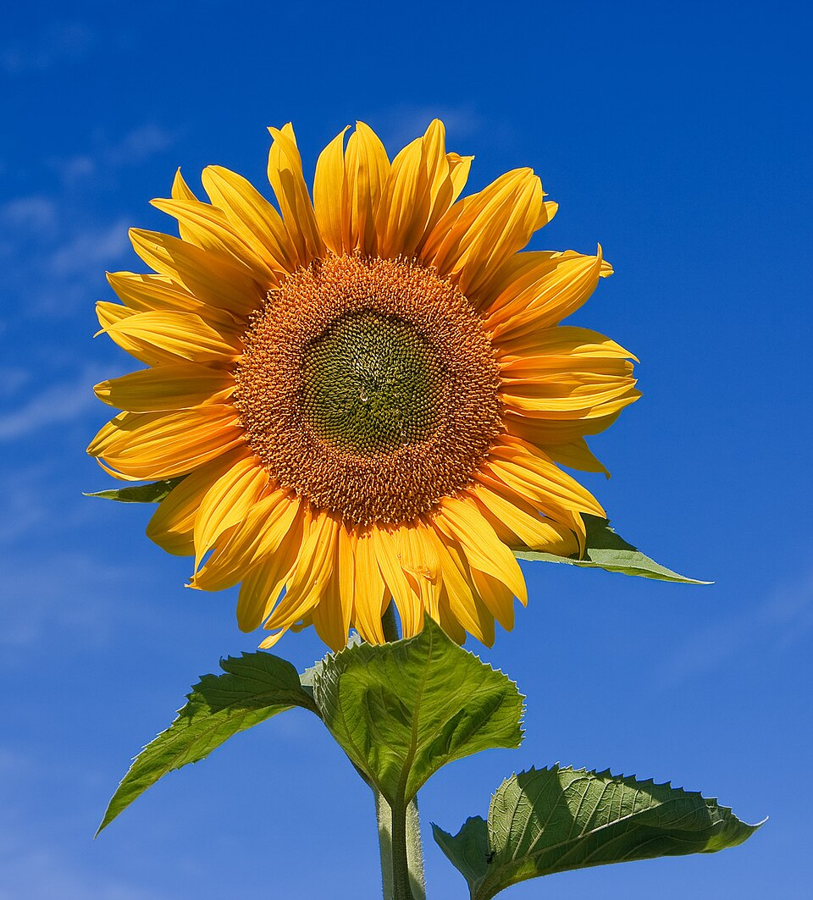
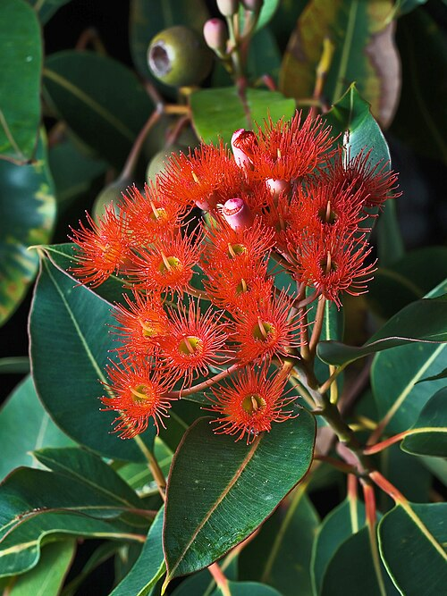
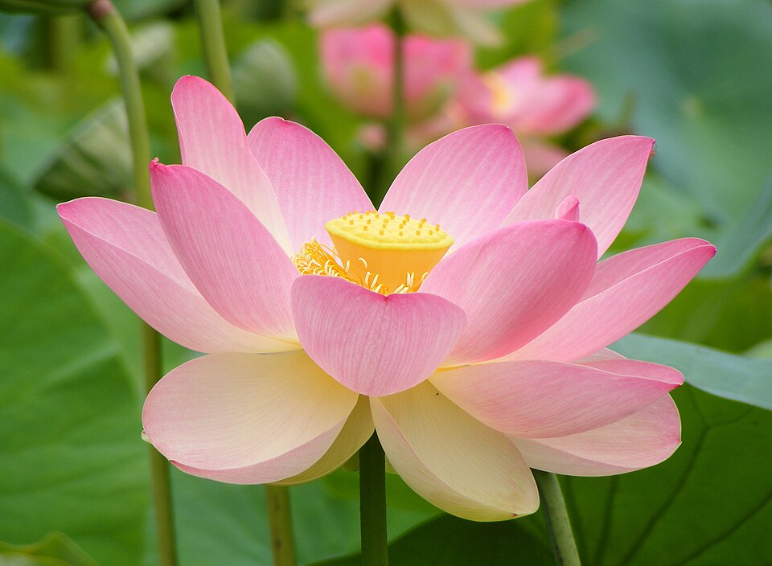
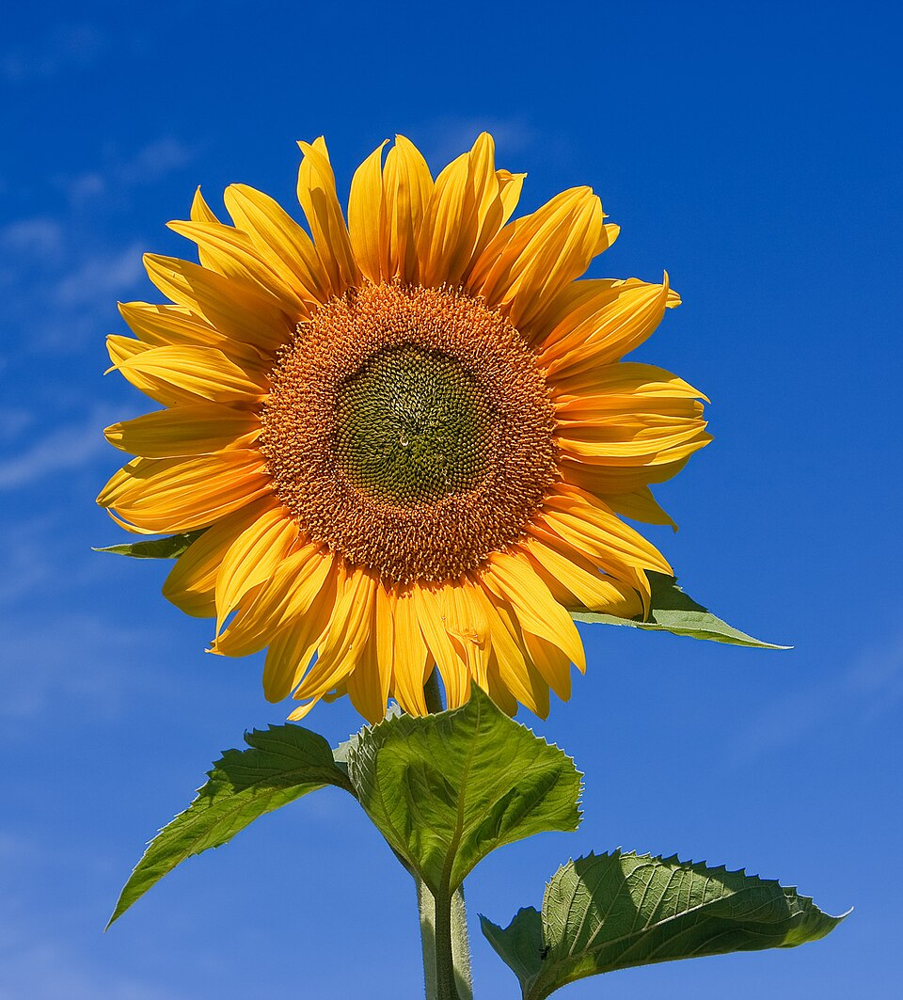
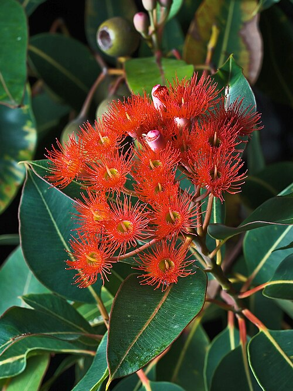
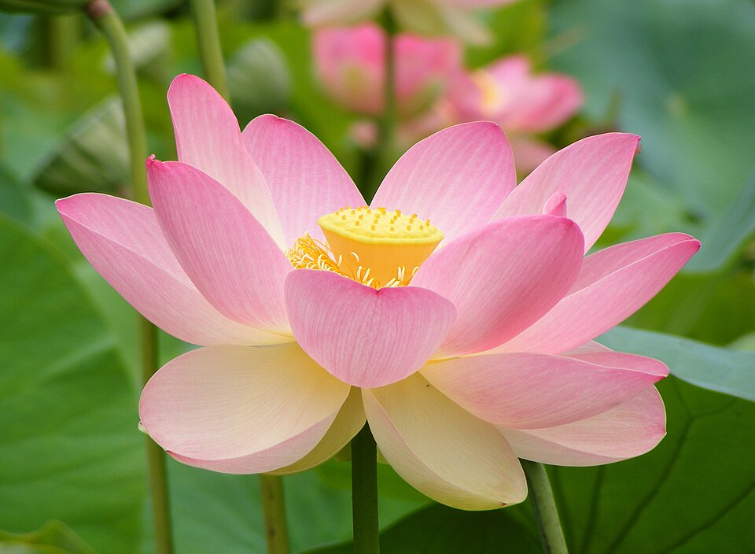
 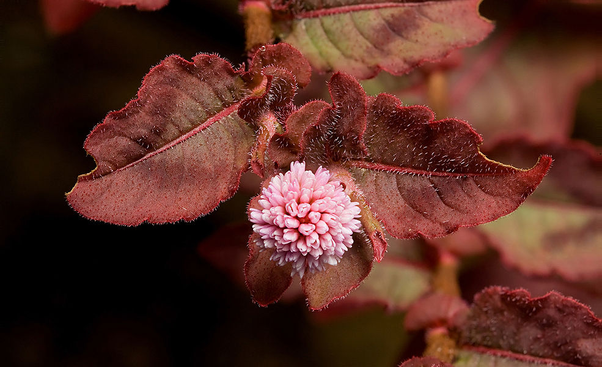
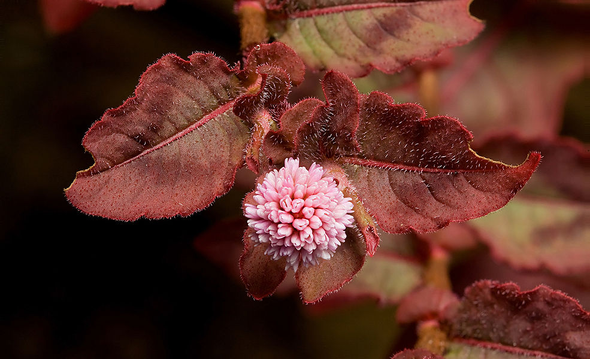
Explore, learn, and interact with beautiful flowers. You can use this page to practice all kinds of DOM events in JavaScript!
Click any flower to set it as the main image.
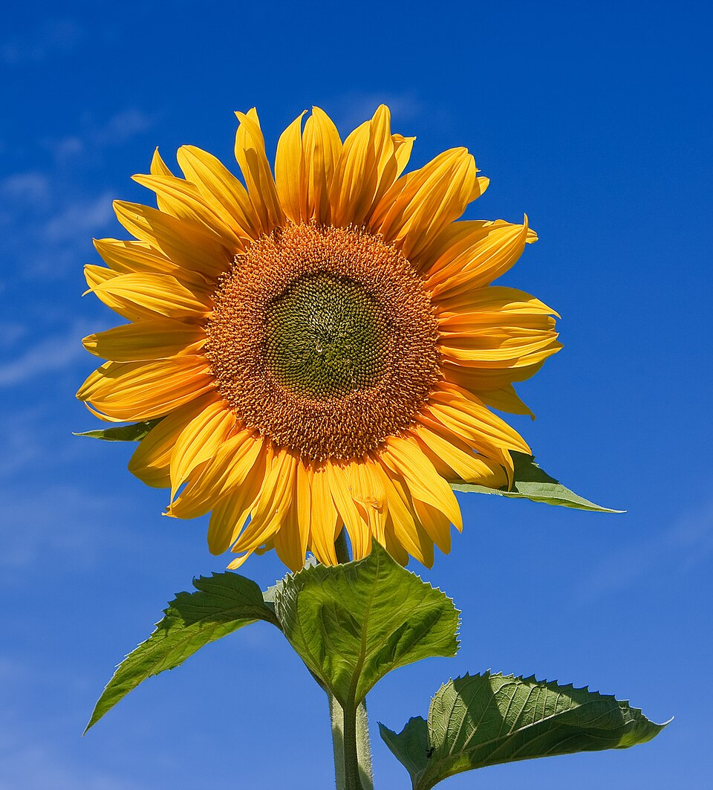
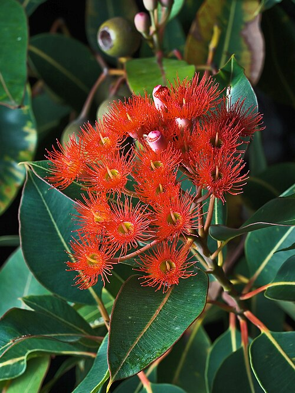
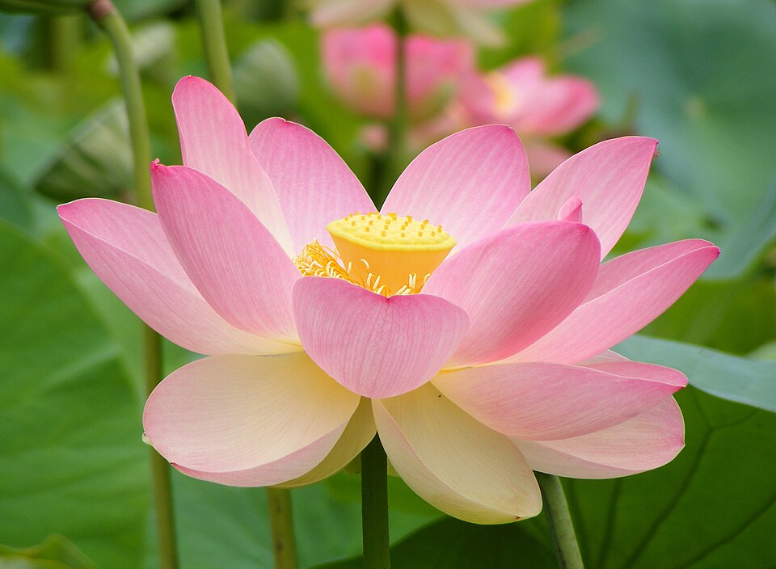
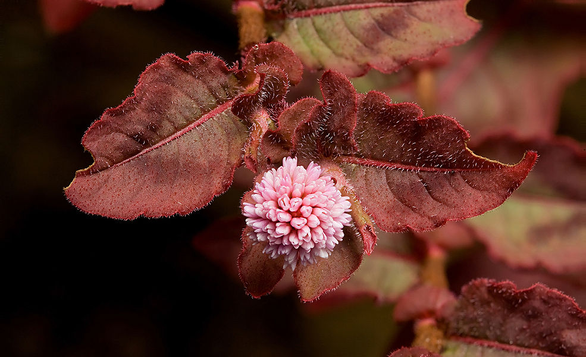
Flowers are the reproductive structures of flowering plants. They come in a variety of colors, shapes, and fragrances to attract pollinators. Flowers symbolize beauty, love, and growth across many cultures.
🌻 The sunflower can contain up to 2,000 seeds.
🌹 Roses are one of the oldest flowers, dating back 35 million years.
🌸 Some flowers only bloom at night, such as the “Queen of the Night”.
🌷 Tulips once caused an economic craze known as "Tulip Mania" in the 1600s.
🌼 Dandelions are entirely edible — root to flower!
| Flower | Color | Meaning |
|---|---|---|
| Rose | Red | Love & Passion |
| Sunflower | Yellow | Happiness & Warmth |
| Lily | White | Purity & Renewal |
| Tulip | Pink | Grace & Affection |
| Lotus | Purple | Spiritual Enlightenment |